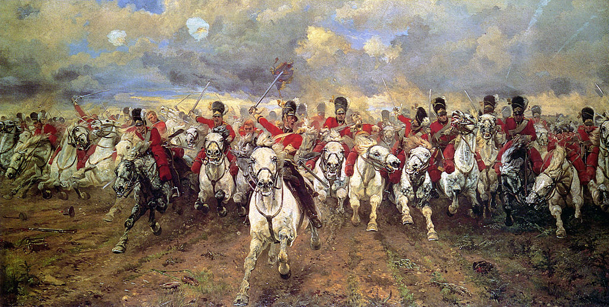

<head>
<meta charset="UTF-8" />
<meta name="keywords" content="drawing, painting" />
<meta name="description" content="drawings by Sunjy" />
<title>Sunjy</title>
<link rel="shortcut icon" type="image/x-icon" href="../../mImages/mCommon/favicon.ico" media="screen" />
<link rel="stylesheet" type="text/css" href="../../mCsses/mCommon/mCssA.css" />
<link rel="stylesheet" type="text/css" href="../../mCsses/mCommon/mCssB.css" />
<link rel="stylesheet" type="text/css" href="../../mCsses/mCommon/mCssC.css" />
<link rel="stylesheet" type="text/css" href="../../mCsses/mCommon/mCssD.css" />
<link rel="stylesheet" type="text/css" href="../../mCsses/mContent/mCssA.css" />
<link rel="stylesheet" type="text/css" href="../../mCsses/mContent/mCssB.css" />
<link rel="stylesheet" type="text/css" href="../../mCsses/mContent/mCssC.css" />
<link rel="stylesheet" type="text/css" href="../../mCsses/mContent/mCssD.css" />
</head>
<script type="text/javascript" src="../../mScripts/mContent/mContentAA.js" /></script>
<script type="text/javascript" src="../../mScripts/mContent/mContentAB.js" /></script>
<script type="text/javascript" src="../../mScripts/mContent/mContentAC.js" /></script>
<script type="text/javascript" src="../../mScripts/mContent/mContentAD.js" /></script>
<script type="text/javascript"></script> 
<script type="text/javascript">
document.write('<div class="mImgAbsolute"></div>');
/*
document.write('<p class="mFontSizeBColor" />From a white paper...</p>');
document.write('<table class="center"><tr><td>');
document.write('');
document.write('</td></tr></table>');
*/
</script>


<script type="text/javascript">
document.write('<p class="mFontSizeBColor" />Scotland Forever!</p>');
document.write('<p class="mFontSizeSColor" />Scotland Forever! by Elizabeth Thompson depicts the start of the charge of the Royal Scots Greys, a British cavalry regiment that charged alongside the British heavy cavalry at the Battle of Waterloo in 1815.<br><br>The title comes from the battle cry of the soldiers who called “Now, my boys, Scotland forever!” as they charged. Butler had never observed a battle; however, she did watch her husband’s regiment during training maneuver, and she positioned herself in front of charging horses to study their movement.<br><br>The painting has highly popular and was reproduced many times and is considered an iconic representation of the battle itself and heroism more generally.<br><br>Tzar Nicholas II of Russia and Kaiser Wilhelm II of Germany both received copies, and later during the First World War, both the British and the Germans used the image in their propaganda material, with the Scots Greys transformed into Prussian cavalry by the Germans.<br><br>For military historians, the painting does have some minor historical inaccuracies. The horses which dominate the picture are heavy grey mounts that were used by the regiment through most of its history until mechanization.<br><br>However, at Waterloo, the regiment had brown horses like the other heavy cavalry regiments, and the name “greys” is derived from the grey uniforms the regiment wore in the early 18th century.<br><br>Also, the bearskin caps were covered during the actual battle by black oilskin covers. Historical records also confirm that the Scots Greys did not start the charge at a gallop, due to the broken ground, and instead advanced at a quick walk.<br><br>According to Wellington, though the Scots Greys were superior individual horsemen, they were inflexible and lacked tactical ability. He later wrote:<br><br>“Our officers of cavalry have acquired a trick of galloping at everything. They never consider the situation, never think of maneuvering before an enemy, and never keep back or provide a reserve.”<br><br>Butler was inspired to paint the charge as a response to a painting that she saw and intensely disliked. Famous for her portrayals of battle scenes, Elizabeth Butler was a remarkable artist and one of the few 19th-century women to acquire fame for her historical paintings.<br><br>Battle of Waterloo<br><br>The Battle of Waterloo was fought in 1815 near Waterloo in Belgium, part of the Netherlands at the time. The French army under Napoleon Bonaparte was defeated by two of the armies of the Coalition.<br><br>A British-led allied army under the command of the Duke of Wellington, and a Prussian army. The battle marked the end of the Napoleonic Wars.<br><br>Waterloo was a decisive engagement and Napoleon’s last. According to Wellington, the battle was “the nearest-run thing you ever saw in your life.”<br><br>Napoleon abdicated four days later, and coalition forces entered Paris. The defeat at Waterloo ended Napoleon’s rule as Emperor of the French and marked the end of his Hundred Days return from exile. This battle ended the First French Empire.<br></p>');
document.write('<table class="center" /><tr><td>');
document.write('<br>The title comes from the battle cry of the soldiers who called “Now, my boys, Scotland forever!” as they charged. Butler had never observed a battle; however, she did watch her husband’s regiment during training maneuver, and she positioned herself in front of charging horses to study their movement.<br><br>The painting has highly popular and was reproduced many times and is considered an iconic representation of the battle itself and heroism more generally.<br><br>Tzar Nicholas II of Russia and Kaiser Wilhelm II of Germany both received copies, and later during the First World War, both the British and the Germans used the image in their propaganda material, with the Scots Greys transformed into Prussian cavalry by the Germans.<br><br>For military historians, the painting does have some minor historical inaccuracies. The horses which dominate the picture are heavy grey mounts that were used by the regiment through most of its history until mechanization.<br><br>However, at Waterloo, the regiment had brown horses like the other heavy cavalry regiments, and the name “greys” is derived from the grey uniforms the regiment wore in the early 18th century.<br><br>Also, the bearskin caps were covered during the actual battle by black oilskin covers. Historical records also confirm that the Scots Greys did not start the charge at a gallop, due to the broken ground, and instead advanced at a quick walk.<br><br>According to Wellington, though the Scots Greys were superior individual horsemen, they were inflexible and lacked tactical ability. He later wrote:<br><br>“Our officers of cavalry have acquired a trick of galloping at everything. They never consider the situation, never think of maneuvering before an enemy, and never keep back or provide a reserve.”<br><br>Butler was inspired to paint the charge as a response to a painting that she saw and intensely disliked. Famous for her portrayals of battle scenes, Elizabeth Butler was a remarkable artist and one of the few 19th-century women to acquire fame for her historical paintings.<br><br>Battle of Waterloo<br><br>The Battle of Waterloo was fought in 1815 near Waterloo in Belgium, part of the Netherlands at the time. The French army under Napoleon Bonaparte was defeated by two of the armies of the Coalition.<br><br>A British-led allied army under the command of the Duke of Wellington, and a Prussian army. The battle marked the end of the Napoleonic Wars.<br><br>Waterloo was a decisive engagement and Napoleon’s last. According to Wellington, the battle was “the nearest-run thing you ever saw in your life.”<br><br>Napoleon abdicated four days later, and coalition forces entered Paris. The defeat at Waterloo ended Napoleon’s rule as Emperor of the French and marked the end of his Hundred Days return from exile. This battle ended the First French Empire.<br>" />');
document.write('</td></tr></table>');
</script>


